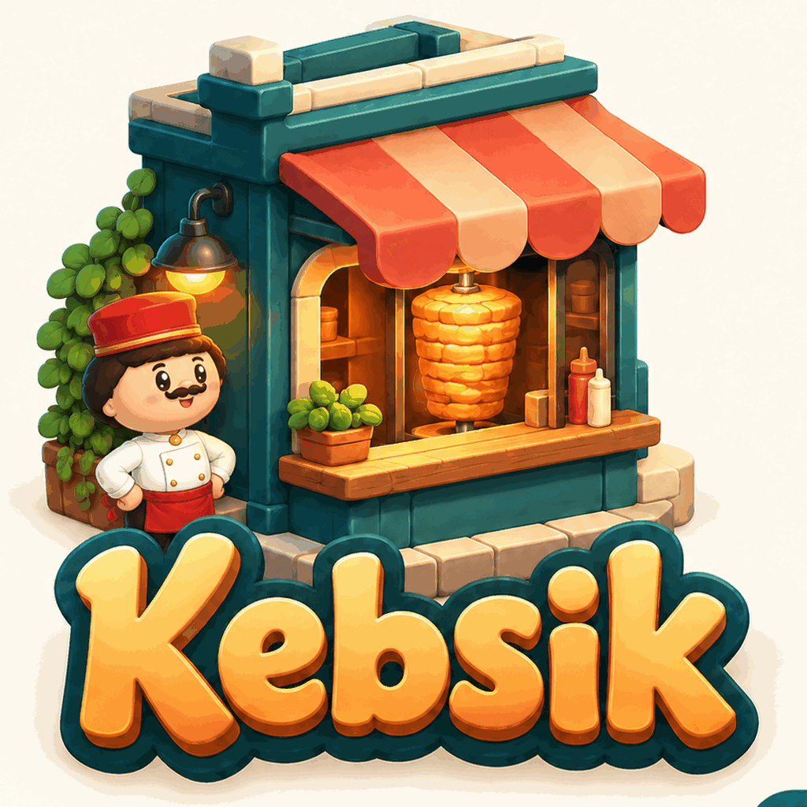

Kebsik to symulator kebaba i gra ekonomiczna na Androida. Zaczynasz od małej budki z kebabem w polskim mieście, a kończysz z własnym budynkiem i siecią lokali. Zamawiasz mięso, ustalasz ceny, zatrudniasz ekipę i sam płacisz za każdy błąd.
Wersja na Androida jest w przygotowaniu. Premiera w Google Play po zakończeniu testów.
| Nazwa | Kebsik: Kebab Shop Simulator (na telefonie: Kebsik) |
| Gatunek | Symulator biznesu, tycoon, zarządzanie restauracją (lokal z kebabem, fast food) |
| Platforma | Android (telefon, pionowo), Google Play |
| Cena | Pobranie 0 zł; reklamy i opcjonalne jednorazowe zakupy; bez subskrypcji |
| Tryb | Jeden gracz, działa offline, bez konta |
| Języki | polski, angielski, niemiecki, turecki |
| Wiek | 16+ (grupa docelowa); klasyfikacja IARC zostanie ustalona przy publikacji |
| Kontakt | kayacidev@gmail.com |
Kebsik jest podzielony na trzy pomieszczenia. W Lokalu ustalasz cenę porcji, menu, grille i godziny otwarcia. Na Zapleczu prowadzisz magazyn, zamawiasz mięso i składniki oraz wybierasz dostawcę. W Biurze zatrudniasz pracowników, prowadzisz marketing, dostawy i sprawy w banku.
Mięso i warzywa się psują, więc za duże zamówienie to strata, a za małe to głodni goście, którzy odchodzą. Pracownicy na etat są stabilni, studenci tańsi, ale mają sesję i częściej odchodzą. Kampanie reklamowe przyciągają gości, lecz zbyt częste nudzą klientów. Kredyt pomaga przetrwać słaby miesiąc, a zbyt duży dług sprowadza komornika.
Lokal ma 10 poziomów: kolejne odblokowują większy stożek mięsa, drugi i trzeci grill, remont i własne auta do dostaw. Możesz kupić budynek zamiast płacić czynsz i otworzyć do 4 kolejnych lokali. Pory roku, pogoda, mecze, festiwale, kontrole i karty decyzji zmieniają każdy tydzień, a co miesiąc raport wyjaśnia, skąd wziął się zysk lub strata. Są 3 poziomy trudności.
Zakupy premium są jednorazowe (np. Pan Mistrz przy grillu, nowe dania, dekoracje, dodatkowi pracownicy, kierownik z podpowiedziami). Na każdym poziomie trudności da się prowadzić dochodowy lokal bez obowiązkowych zakupów; dodatki premium są opcjonalne.
Kebsik is a kebab shop simulator and business game for Android. You start with a small kebab stand in a Polish city and grow it into your own building and a chain of shops. You order the meat, set the prices, hire the crew and pay for every mistake yourself.
The Android release is being prepared. Google Play launch will follow testing.
| Genre | Business simulator, tycoon, restaurant management (kebab shop, fast food) |
| Platform | Android phones (portrait), Google Play |
| Price | 0 to download; contains ads and optional one-time purchases; no subscription |
| Mode | Single player, works offline, no account |
| Languages | Polish, English, German, Turkish |
| Age | 16+ (target audience); IARC rating to be determined during publication |
| Contact | kayacidev@gmail.com |
The game has three rooms: the Shop (price, menu, grills, opening hours), the Prep room (storeroom, meat and ingredient orders, supplier) and the Head office (staff, marketing, delivery, bank). Meat and vegetables spoil, students are cheap but quit more often, too many ad campaigns tire customers, and too much debt brings the bailiff. The shop has 10 levels that unlock a bigger meat cone, a second and third grill, a renovation and delivery cars; you can buy the building and open up to 4 more branches. A monthly report explains where your profit or loss came from. There are 3 difficulty levels.
Kebsik ist ein Döner-Imbiss-Simulator und Wirtschaftsspiel für Android. Du startest mit einem kleinen Kebab-Stand in einer polnischen Stadt und baust ihn zum eigenen Gebäude und zu einer Imbisskette aus: Fleisch bestellen, Preise festlegen, Team einstellen, Werbung machen, Kredite aufnehmen.
Die Android-Version wird vorbereitet. Der Google-Play-Start folgt nach den Tests.
| Genre | Wirtschaftssimulation, Tycoon, Restaurant-Management (Döner-Imbiss) |
| Plattform | Android-Smartphones (Hochformat), Google Play |
| Preis | Download 0 €; enthält Werbung und optionale Einmalkäufe; kein Abo |
| Modus | Einzelspieler, offline spielbar, ohne Konto |
| Sprachen | Deutsch, Polnisch, Englisch, Türkisch |
| Alter | 16+ (Zielgruppe); IARC-Einstufung folgt bei Veröffentlichung |
| Kontakt | kayacidev@gmail.com |
Kebsik, Android için bir kebap oyunu ve işletme simülasyonudur. Bir Polonya şehrinde küçük bir kebap tezgâhıyla başlar, onu kendi binana ve şubelerden oluşan bir zincire dönüştürürsün: et sipariş eder, fiyat belirler, ekip kurar, reklam yapar, kredi çekersin.
Android sürümü hazırlanıyor. Testler tamamlandıktan sonra Google Play’de yayımlanacak.
| Tür | İşletme simülasyonu, tycoon, restoran yönetimi (kebapçı, fast food) |
| Platform | Android telefon (dikey), Google Play |
| Fiyat | İndirmesi 0 ₺; reklam ve isteğe bağlı tek seferlik alımlar içerir; abonelik yok |
| Mod | Tek oyunculu, internetsiz oynanır, hesap gerekmez |
| Diller | Türkçe, Lehçe, İngilizce, Almanca |
| Yaş | 16+ (hedef kitle); IARC derecesi yayın sürecinde belirlenecek |
| İletişim | kayacidev@gmail.com |